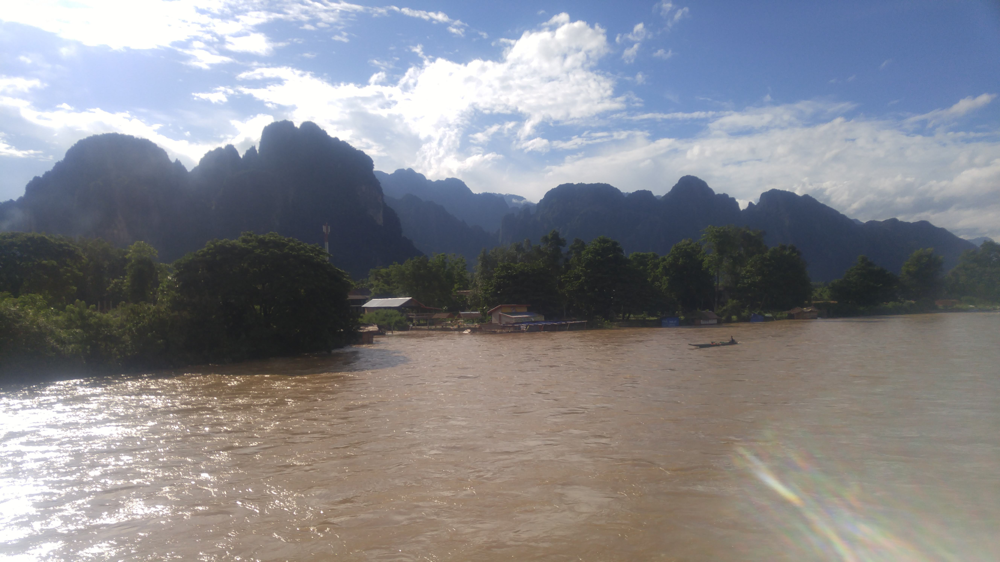

Go Back
Vang Vieng

Vang Vieng is a very scenic little town surrounded by mountains, lush rice fields, caves and rivers. It's located in north central Laos and is roughly in the middle of Vientiane and Luang Prabang so it makes for a good stopover on any Laos itinerary. The most famous activity here is floating down the river in small tubes and essentially going on a river bar crawl. It's a popular town for tourists (at least it was back in pre-covid times when I visited). Vang Vieng is particularly notorious for its party scene which involves floating down the river, a variety of bars and clubs and jungle parties. I stayed in Vang Vieng for 4 nights and quite enjoyed the experience there. Here are some of my recommendations when visiting Vang Vieng.
The most famous activity in Vang Vieng for backpackers is floating down the river in a tube stopping along the way at different riverside bars. This was a very unique experience that is a very fun time. A tour company drove a big group of us from our hostel to the rental shop to grab our donut shaped tubes and life jackets. You then head down to the river and start your float down. When I went there were 3 bars along the riverside but I've heard in the past there were up to 20 bars but many were forced to shut due to relatively large amounts of tourists dying or getting injured. Overall I found the tubing experience fairly safe, however many in the past who've had too much alcohol or drugs have gotten injured or even died. The staff will throw bottles attached to ropes into the river and will pull you into the different bars while you float along. There were different drink specials, food and many entertaining games such as beer pong and basketball at some of the bars. This is a fun experience while visiting Vang Vieng.
The jungle parties in Vang Vieng are also quite an experience. They are held out in remote jungle bars that are uniquely designed along side the nature. They'll typically play techno/ rave/ trance music, have interesting visual effects and do fire jumping shows. You can take a collective bus out to the site and many of the pushy drivers will try to advertise this to you. I found the driver's in Laos the hardest to negotiate with. While other more developed places have apps like Grab, GoJek etc here the transportation service acted like a mafia holding a monopoly on all of the business. They would blatantly overcharge you but this is just something you have to learn to accept here. It's still cheap for western transportation standards but not for Southeast Asian standards. Ultimately this didn't take away from the overall experience of the jungle party which I did enjoy!
There are so many stunning nature sights and activities in the area so it's a great place for hiking, water activities and seeing unique wildlife. Some of the top rated attractions in Vang Vieng for sightseeing include: Vang Vieng Elephant Sanctuary, Pha Ngern Viewpoint, Tham Phu Kham Cave and Lagoon, Tham Nam and Tham Chang Caves, Wat Kang and Nam Xay Viewpoint. For scenic daytrips in the area I suggest looking into some of these places.
Back at the time that I visited when I was younger I chose to stay at Nana's Backpackers. This is a great hostel if you're into the party scene. I checked in with friends I had made in Luang Prabang and certainly had a crazy 4 days after that. They had happy hours where the alcohol was basically free but you were responsible to pay for the mixer. This of course led to some crazy pregame parties before the majority of people went out either to the bar, club or jungle party. There is a pool where many people enjoyed swimming and they also feature a restaurant that had quite nice food. The hostel will help to arrange sightseeing and tours in the area as well. I believe they had private rooms here but again if you aren't interested in seeing people partying basically all the time maybe reconsider where to stay. If you want to party, look no further.